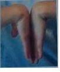
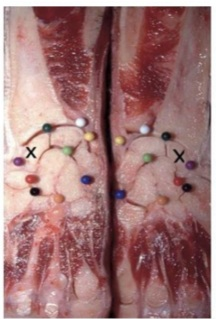
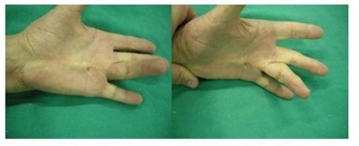
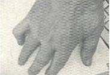

Questão 1 · Doença de Dupuytren · 4000001189A doença de Dupuytren acomete mais homens, na sétima década de vida e é caracterizada classicamente por:
A Granulomas caseosos em articulações metacarpo-falangianas.
B Compressão do nervo mediano na passagem do túnel do carpo da mão.
C Fibrodisplasia da fáscia palmar, geralmente bilateral, com espessamento e formação de nódulos.
D Cisto sinovial com evolução para osteomielite em pacientes diabéticos.
Questão 2 · Tenossinovite do Estilóide Radial De Quervain · Tenossinovite de De Quervain · Tenossinovites · 4000121072Abdução repetida de polegar associada a esforços desse dedo e supinação de mão associada à exão de antebraço se correlacionam, respectivamente, com quadros clínicos de
A enfermidade de De Quervain e tendinite de cabo longo de bíceps.
B síndrome do túnel do carpo e síndrome do manguito rotador.
C enfermidade de De Quervain e tendinite do supraespinhal.
D tenossinovite de extensores de punho e tendinite distal de bíceps.
Questão 3 · Patologias da Mão · Síndrome do Túnel do Carpo · Síndromes Compressivas dos Membros Superiores · 4000025984A alteração mais comum do nervo mediano é a sua compressão no punho, denominada síndrome do túnel do carpo. Entretanto, existem várias outras afecções que acometem o nervo mediano e alguns achados clínicos e/ou eletrofisiológicos conduzem ao diagnóstico diferencial, como a ocorrência de:
A Atrofia do músculo abdutor curto do polegar.
B Hipoestesia do primeiro ao terceiro dedos.
C Sinal de Tinel na região anterior do punho.
D Atrofia dos músculos proximais do antebraço.
Questão 4 · Testes Especiais · Diagnóstico · 4000124541Assinale a alternativa que preenche, correta e respectivamente, as lacunas do parágrafo abaixo. A imagem representa o teste de ...... que, quando positivo, pode ser útil para diagnosticar ..........

A Finkelstein - síndrome do túnel do carpo.
B Finkelstein - tenossinovite estenosante de De Quervain.
C Finkelstein - epicondilite medial.
D Phalen - síndrome do túnel do carpo.
E Phalen - tenossinovite estenosante de De Quervain.
Questão 5 · Compressão do nervo ulnar · 4000055925Paciente informa que há 4 meses apresenta dormência em região hipotenar e em dedos da face medial de mão. O músculo I interósseo dorsal da mão está hipotro ado e há redução da força na adução de punho. A oponência está preservada. Considerando a descrição do acometimento, assinale a alternativa correta.
A O quadro é compatível com lesão do nervo mediano no punho.
B O quadro é compatível com lesão do nervo ulnar no cotovelo.
C O quadro é compatível com lesão do nervo mediano no cotovelo.
D O quadro é compatível com lesão do nervo radial no cotovelo.
E O quadro é compatível com lesão do nervo ulnar no punho.
Questão 6 · Compressão do nervo ulnar · 4000050097Dentre as diversas sequelas na Hanseníase, há a “mão de parteira ” – Contratura exural do 4° e 5° quirodáctilos, a qual é decorrente do(da)
A reabsorção óssea.
B comprometimento do nervo mediano.
C comprometimento do ramo cutâneo do nervo radial.
D comprometimento de todo o feixe do nervo radial.
E comprometimento do nervo ulnar.
Questão 7 · Músculos e Inervação · 4000023270Com relação à inervação sensitiva da mão, a sensibilidade do dedo anular é dada pelo(s) nervo(s)
A mediano
B ulnar
C radial, mediano e ulnar
D radial e ulnar
Questão 8 · Síndromes compressivas dos membros inf eriores · 4000092306Mulher de 52 anos, com IMC = 29 kg/m², queixa-se de dor intermitente, em queimação, localizada na face anterolateral da coxa direita, acompanhada de parestesia local. Refere que a dor piora com a extensão e abdução da coxa e ao andar, e melhora ao sentar-se. Considerando os dados apresentados, a principal hipótese diagnóstica para a paciente é:
A Bursite do iliopsoas.
B Meralgia parestésica.
C Síndrome da banda iliotibial.
D Bursite isquiática.
Questão 9 · Síndromes compressivas dos membros inf eriores · 4000051983Sobre a Síndrome do Túnel do Tarso, considere as afirmativas a seguir. I. O nervo acometido é o nervo tibial posterior em região maleolar medial. Há dor local, dormência e queimação em região plantar.; II. O nervo acometido é o nervo tibial anterior no tornozelo. Há dor local, dormência e queimação em face anterior do tornozelo e dorso do pé.; III. É a mononeuropatia mais comum nos membros inferiores.; IV. Na avaliação semiológica, é possível evocar o sinal de Tinel. Assinale a alternativa correta.
A Somente as afirmativas I e II são corretas.
B Somente as afirmativas I e IV são corretas.
C Somente as afirmativas III e IV são corretas.
D Somente as afirmativas I, II e III são corretas.
E Somente as afirmativas II, III e IV são corretas.
Questão 10 · Diagnóstico · 4000027173Sabemos que são vários os fatores envolvidos na gênese da Síndrome do Túnel do Carpo, tais como: gravidez, menopausa, obesidade, insu ciência renal, hipotireoidismo, lúpus eritematoso e outros. Durante o exame físico, o teste mais específico e sensível para o diagnóstico dessa patologia é o de
A Tinel.
B Durkan.
C Phalen.
D Phalen invertido.
Questão 11 · Semiologia da mão · Apresentação clínica · 4000019946A tendinite de Quervain é um reumatismo de partes moles, comum em mulheres na idade de 30 a 50 anos, caracterizada pelo acometimento dos tendões abdutor longo e extensor curto do polegar. Nessa tendinite, o desvio forçado da mão fechada para o lado ulnar, utilizado para reproduzir a dor no processo estiloide do rádio, é denominado de teste de:
A Yergason.
B Thompson.
C Jobe.
D Finkelstein.
Questão 12 · Diagnóstico · 4000055099Mulher de 32 anos, com 35 dias de pós-parto, queixa-se de dor na região do processo estiloide radial direito e fraqueza à preensão com o polegar e o indicador da mão direita. Ao exame físico, observam-se dor e tumefação na região da tabaqueira anatômica e manobra de Finkelstein positiva. Qual é a principal hipótese diagnóstica para essa paciente?
A Síndrome De Quervain.
B Contratura de Dupuytren.
C Síndrome do canal de Guyon.
D Dedo em gatilho.
Questão 13 · Epidemiologia e f isiopatologia · 4000029715A Síndrome do Túnel do Carpo é uma condição de compressão do nervo mediano ao atravessar o punho, que causa um conjunto de sinais e sintomas, que incluem, dentre outros, dor noturna e parestesia na mão. É a neuropatia compressiva mais comum e mais estudada do ser humano. Não está relacionada dentre os fatores de risco dessa patologia:
A Gravidez.
B Hipertireoidismo.
C Tabagismo.
D Flexão extrema e repetitiva do punho no trabalho.
Questão 14 · Síndrome do Túnel do Carpo · 4000080192Paciente feminina, de 53 anos, com história de diabetes, em uso de metformina, apresenta 4 meses de evolução de parestesia em mão direita, que acomete os 4 primeiros quirodáctilos e piora durante a noite. Apresenta força motora, reflexos e trofismo preservados. Tinel e Phalen positivos. Em relação ao caso, assinale a assertiva correta.
A O diabetes mellitus não está associado ao quadro.
B O uso de tala de imobilização do punho em posição neutra deve ser indicado apenas como terapia de segunda linha.
C Como a paciente ainda não apresenta alteração trófica ou de força motora a descompressão cirúrgica precoce é estratégia aceitável para evitar progressão.
D Com a evolução da doença pode ocorrer fraqueza dos movimentos de oposição e abdução do polegar.
E Os achados da eletroneuromiografia são diagnósticos, mas não são relevantes em relação à definição terapêutica.
Questão 15 · Compressão do nervo interósseo posterior · 4000069042Paciente masculino, 45 anos, mecânico, apresenta quadro de 3 meses de evolução de dor em face posterior de antebraço direito, que aumenta com esforços e movimentos de pronação e supinação. Ao exame, a sensibilidade é normal, mas o paciente apresenta di culdade para extensão dos dedos. O quadro descrito é compatível com qual dos diagnósticos abaixo?
A Síndrome do túnel ulnar.
B Síndrome do túnel do carpo.
C Síndrome do músculo pronador.
D Compressão externa do nervo interósseo anterior.
E Síndrome do músculo supinador.
Questão 16 · Tenossinovite do Estilóide Radial De Quervain · Tenossinovite de De Quervain · 4000021863Doença que pode ser considerada como lesão por esforços repetitivos (LER ou DORT):
A Artrite reumatoide.
B Síndrome de De Quervain.
C Espondilite anquilosante.
D Síndrome de Reiter.
Questão 17 · Anatomia óssea · 4000088262A foto abaixo apresenta dissecção anatômica de punho congelado em corte sagital (VER IMAGEM). A marca X corresponde a qual estrutura?

A Escafoide.
B Semilunar.
C Capitato.
D Pisiforme.
E Piramidal.
Questão 18 · Músculos e Inervação · 4000067023Dentre os músculos extrínsecos do Antebraço Volar abaixo, qual deles NÃO é inervado pelo Nervo Mediano?
A Flexor ulnar do punho.
B Pronador quadrado.
C Flexor radial do punho.
D Pronador redondo.
E Flexor longo do polegar.
Questão 19 · Diagnóstico · 4000092672Homem, 60 anos, há 6 meses apresenta retração progressiva do dedo anular D, com aparecimento de nódulos na palma da mão D. Não relata trauma, não faz uso de medicamentos, mas refere que o seu avô apresentou a mesma situação clínica na mão. Qual é o diagnóstico mais provável?

A Lesão do nervo mediano.
B Fibromatose palmar.
C Tendinite do extensor do dedo anular.
D Ruptura dos intrínsecos.
E Lesão do nervo ulnar.
Questão 20 · Compressão do nervo interósseo posterior · 4000055887Paciente com 38 anos apresenta dor crônica em face posterior de antebraço direito, diminuição de força de extensão dos dedos, mas sem alteração de sensibilidade. Sendo indicado tratamento cirúrgico, qual dos procedimentos abaixo seria o mais compatível com o quadro apresentado?
A Liberação do túnel do carpo.
B Descompressão do túnel do supinador.
C Descompressão do nervo ulnar no cotovelo.
D Neurólise total do plexo braquial.
E Liberação do nervo mediano na inserção do bíceps.
Questão 21 · Condutas e tratamento · 4000041443Gilmar vem à consulta médica e se queixa de dor e fraqueza na mão direita. Ao exame, apresenta dor na base do primeiro quirodáctilo e manobra de Finkelstein positiva à direita. Relata ser hipertenso e diabético de longa data. Trouxe seus últimos exames realizados uma semana antes. Exame: Creatinina: 2,2 mg/dl; Ureia: 51 mg/dl; Glicemia de jejum: 198 mg/dl; TGO: 32 mg/dl; TGP: 28 mg/dl. A melhor conduta para este caso é:
A Naproxeno 500 mg 8/8 h, por via oral, por 30 dias.
B Celecoxibe 200 mg, por via oral, uma vez ao dia, por 30 dias.
C Prednisona 20 mg, por via oral, uma vez ao dia, por 7 dias.
D Cetoprofeno 100mg, por via intramuscular, uma vez ao dia, por 5 dias.
E Infiltração com corticoide.
Questão 22 · Epidemiologia e f isiopatologia · 4000060221O nervo comprometido na síndrome do túnel do carpo é o:
A radial.
B ulnar.
C mediano.
D extensor reticular.
Questão 23 · Diagnóstico · Condutas e tratamento · 4000079127Mulher, 67 anos, com parestesia noturna na mão esquerda. As manobras de Phalen e Tinel são positivas. O tratamento inicial é:
A Imobilização do punho.
B Infiltração do punho com corticoide.
C Cirurgia para descompressão do nervo mediano.
D Anti-inflamatórios não esteroides.
Questão 24 · Apresentação clínica · Testes Especiais · Diagnóstico · 4000071759Causa de absenteísmo crescente entre trabalhadores cujas funções laborais exigem o teclar repetitivo diante das telas de computadores, a síndrome do túnel carpal é entidade nosológica rica em sintomas e sinais. Um destes, denominado sinal de Tinel, se expressa por formigamento ou dor do tipo choque na distribuição do nervo mediano à manobra de:
A Compressão digital da região hipotenar.
B Percussão da região volar do punho.
C Flexão prolongada do punho a 90º.
D Hiperextensão forçada do polegar.
Questão 25 · Anatomia óssea · 4000028601Os ossos da fileira proximal do punho são:
A Escafoide, semilunar, captato e pisiforme.
B Hamato, semilunar, piramidal e pisiforme.
C Trapezoide, piramidal, escafoide e pisiforme.
D Trapézio, escafoide, semilunar e piramidal.
E Nehuma das opções.
Questão 26 · Semiologia da mão · Síndrome do Túnel do Carpo · 4000009175Como é executado o teste de Tinel na investigação clínica da síndrome do túnel do carpo?
A Digitopercussão sobre o nervo mediano ao nível do punho.
B Flexão do punho em 90 graus durante 1 minuto.
C Preensão firme dos dedos sobre polegar e flexão da mão.
D Levantamento de peso com punho reto por 3 minutos.
E Flexão-extensão repetitiva do punho por 1 minuto.
Questão 27 · Diagnóstico · 4000008520Paciente com 54 anos, sexo feminino, com queixa de dor e parestesia nas mãos. Refere que a dor é pior à noite, acordando algumas vezes por causa desta. Refere ainda que a dor se irradia até os ombros. Apresenta hipotro a dos músculos da eminência tenar. A hipótese diagnóstica é síndrome do:
A Interósseo anterior.
B Túnel radial.
C Canal ulnar.
D Interósseo posterior.
E Túnel do carpo.
Questão 28 · Apresentação clínica · 4000093198Paciente com síndrome do túnel do carpo, distúrbio osteomuscular relacionado ao trabalho, costuma apresentar:
A Hipoestesia e dor na mão, principalmente diurna, e parestesia na área dos dedos médio, anular e mínimo, geralmente com o dedo mínimo mais atingido.
B Hipoestesia e dor na mão, principalmente noturna, e parestesia na área dos dedos polegar, indicador e médio e na metade radial do anular, geralmente com o indicador mais atingido.
C Dor intensa no trajeto do abdutor longo do polegar e parestesia na área dos dedos médios, anular e mínimo, geralmente com o dedo mínimo mais atingido.
D Dor intensa no trajeto do abdutor curto do polegar quando prendem firmemente os dedos sobre o polegar e flexionam a mão em desvio radial.
E Dor intensa no trajeto do abdutor longo do polegar quando prendem firmemente os dedos sobre o polegar e flexionam a mão em desvio cubital.
Questão 29 · Doença de Dupuytren · 4000089007A enfermidade de Dupuytren (VER IMAGEM):

A Está relacionada à doença ocupacional.
B Inicia, na maioria dos casos, pelo comprometimento do quarto e do quinto quirodáctilos.
C Adere a músculos e nervos da mão.
D Raramente compromete as duas mãos.
E Acomete mais frequentemente mulheres após a menopausa.
Questão 30 · Síndrome do Túnel do Carpo · Epidemiologia e f isiopatologia · 4000022459A síndrome do túnel do carpo é condição patológica muito comum na população em geral. Assinale a incorreta:
A É a neuropatia compressiva mais comum no membro superior.
B Ocorre mais comumente em mulheres.
C Pode aparecer transitoriamente durante a gestação.
D A eletroneuromiografia é o exame complementar de escolha e pode estar normal entre até 25 a 31% dos casos.
E Mieloma múltiplo, hipotiroidismo e amiloidose não são causas de síndrome do túnel do carpo.
Questão 31 · Semiologia da mão · Semiologia do ombro · 4000019391As manobras de Yergason é um Phalen são semiologicamente úteis para o diagnóstico, respectivamente, de:
A Cistos sinoviais e tendinite de calcâneo;
B Tendinite Bicipital e Síndrome do Túnel do Carpo;
C Compressão do nervo ulnar e compressão do nervo femoral;
D Tendinite de Quervain e tenossinovite estenosante.
Questão 32 · Testes Especiais · Diagnóstico · 4000103803Os sinais de Tinel e de Phalen são encontrados na:
A compressão do nervo ciático.
B ruptura do tendão de Aquiles.
C dissecção do cisto de Baker.
D síndrome do túnel do carpo.
E necrose asséptica da cabeça do fêmur.
Questão 33 · Doença de Dupuytren · 4000097516Referente à contratura de Dupuytrens, assinale a alternativa correta.
A Não tem fator hereditário.
B É uma contratura do tendão adutor do dedo mínimo.
C Afeta todos os dedos igualmente.
D Ocasionalmente a amputação é necessária.
E Alcoolismo ou cirrose não tem relação com essa doença.
Questão 34 · Tenossinovite de De Quervain · 4000005085A Tenossinovite de D’Quervain é:
A Uma inflamação que atinge os tendões extensores do antebraço em sua origem no cotovelo.
B Uma inflamação que acomete o flexor ulnar do carpo na sua passagem através do canal de Guyon.
C Uma inflamação da bainha do tendão flexor longo do polegar na sua passagem pelo túnel do carpo.
D Uma inflamação dos tendões extensor curto e abdutor longo do polegar na sua passagem pelo 1º compartimento dorsal do punho.
E Uma inflamação do tendão flexor comum dos dedos em sua passagem pela polia A1.
Questão 35 · Epidemiologia e f isiopatologia · 4000086246A tenossinovite de De Quervain atinge os tendões:
A extensor curto do polegar e abdutor longo
B extensor longo do polegar e abdutor curto
C extensor longo do polegar e abdutor longo
D extensor curto do polegar e abdutor curto
E extensor longo do polegar e extensor curto
Questão 36 · Lesões tendíneas da mão · 4000011639Paciente vítima de ferimento por faca na palma da mão. Ao exame físico observa-se que o paciente não consegue etir ativamente as articulações interfalângicas proximal e distal do dedo indicador e a articulação interfalângica distal do dedo médio. Pode-se afirmar que o paciente apresenta lesão dos tendões: Respostas: 1 12 23 34
A interósseo ventral, flexores longos do indicador e médio.
B interósseo ventral e flexores profundos do indicador e médio.
C flexores superficial e profundo do dedo indicador e flexor superficial do médio.
D flexores curto e longo do indicador e longo do médio.
E flexor superficial e profundo do indicador e superficial do médio.